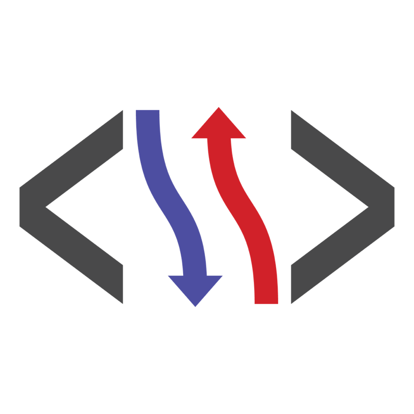

Introduction
CoralUI is a library of components and styles. CoralUI's components are built on web components, a collection of standards that enable encapsulated and reusable components on the web. While the collection of standards holds much promise for the future of the web, CoralUI specifically only takes advantage of the custom elements portion. Other parts of the collection of standards are insufficiently supported in targeted browsers and existing polyfills are too incomplete for feasible use.
Enhanced API
CoralUI's components are essentially extended DOM elements. We enhance the existing API with additional functionality, as well as providing some patterns that aren't available with native HTML alone. Since we expose a JavaScript API that’s based on the native DOM API and has all of the same methods as any other HTML element instance, anyone familiar with the DOM already knows most of the API works. Where it has been extended, each component is well documented, with most having a 'configurator' that allows experimentation with the component right here. Each component also has detailed JSDoc documentation for understanding what APIs are exposed. There is also some common API described in the Base Classes and Interfaces sections below.
Most API is available via markup, so don’t have to write JavaScript for most basic uses. All you have to do is write the markup for a component, just like you would a normal HTML element.
See the Components section of this site to get started exploring what is available.
Future Thinking
CoralUI is pushing the web forward by beginning to implement the Web Components specification in our library. However, given the landscape of browser implementation and the state of the polyfill ecosystem, we decided to only implement custom elements at this time.
A strong advantage CoralUI derives from custom elements is the ability to hide many implementation details from the consumer. More to the point, we found that designs become closely tied to their markup. The use of custom elements allows much more freedom to change the underlying markup that supports those elements. This makes the exposed API smaller and more explicit, resulting in a lower risk of updates to CoralUI needing to introduce breaking changes.
In addition, every Coral component is an HTML element. This give us the ability to create components from markup or JavaScript and lets us treat them like any other native element, setting properties, appending them in the DOM, etc. Following the patterns used in actual HTML elements, we use JavaScript’s native prototype driven inheritance.
For more detail, see the webcomponents section of the Architecture documentation.
Accessibility
Having an inaccessible application means alienating an entire segment of society by making your application completely unusable to them. To help you avoid this, we’ve made it a rule that every CoralUI component should be accessible. We’ve also built a few things into CoralUI 3 to make implementing accessibility easier for component authors and consumers alike. We leverage Coral’s overlay mixin to help keyboard users work more easily with overlays, and Keys makes it easier to implement keyboard support for components.
Browser Support
CoralUI is designed to support the following browsers:
-
Chrome (latest)
-
Safari (latest)
-
Firefox (latest)
-
Edge (latest)
-
IE 11
-
iOS 7+
-
Android 4.4+
i18n
CoralUI provides a robust internal system for internationalization of its strings.
See the Coral.i18n class documentation for more API details.
Developer Fundamentals
Programmatically interacting with components
The Components Docs provide detailed information on each component in CoralUI,including the different attributes available, and built-in methods and events on the JavaScript components.
Here are some quick steps to get you started with JavaScript components:
Coral UI 3 widgets can be instantiated using a Coral class instance:
/* Alert - Coral class constructor*/ var alert = new Coral.Alert(); alert.header.innerHTML = "Hey!" alert.content.innerHTML = "This is an alert."; alert.variant = "info";
Or by creating a HTML Element directly:
/* Alert - DOM element */
document.createElement('coral-alert');
Programmatically interacting with sub-components
Let's say we create an element and add some Coral components to it with markup:
var el = document.createElement('div');
el.innerHTML = '<coral-numberinput></coral-numberinput>';
document.body.appendChild(el);
One would expect we could now do something like this:
var numberInput = el.firstElementChild; numberInput.value = 10;
This works great in Chrome (which has native Custom Elements support), but does nothing in both Firefox and IE 11 because the element hasn't been upgraded yet.
The workaround is to use the method Coral.commons.ready(el, cb):
var numberInput = el.firstElementChild; Coral.commons.ready(el, function() numberInput.value = 10; });
Coral.commons.ready(el, cb) will force an upgrade on the component and its sub-components before calling the provided callback.
This is the full code example :
var el = document.createElement('div');
el.innerHTML = '<coral-numberinput></coral-numberinput>';
var numberInput = el.firstElementChild;
document.body.appendChild(el);
// add callback
Coral.commons.ready(el, function() {
numberInput.value = 10;
});
Result: The above code works in all supported browsers, all of the time.
Background
In browsers, that have native support for custom elements, components are upgraded and ready to go immediately. However, in polyfilled environments, MutationObservers are used to determine
when elements are added and need to be upgraded. MutationObservers queue "microtasks", which fire event listeners before the next animation frame. As such, accessing the component API
of an element created from markup has to happen on the next animation frame. In browsers, that implement requestAnimationFrame, we can simply insert dynamic markup, then wait for the
next animation frame and execute the callback, while being certain that all custom elements have been upgraded.
Read more about Custom Elements.
Creating components
The magic of creating components begins at Coral.register(). This is used to define the JavaScript "class" that will be instantiated for each component. Let's take a look at creating a simple component to display the weather:
Coral.register({
name: 'Weather',
tagName: 'coral-weather',
className: 'coral-Weather',
properties: {
temperature: {
default: 70,
transform: Coral.transform.number,
sync: function() {
this.innerHTML = 'It\'s ' + this.temperature + '° outside today!';
}
}
}
});
namedefines the class name of the component within theCoralJavaScript namespace. Here we've given the valueWeathermeaning if consumers wished to instantiate the weather component they would do so usingnew Coral.Weather();.tagNamedefines the element tag name used within markup to instantiate the component. Here we've given the valuecoral-weathermeaning if consumers wished to instantiate the greeting component using markup they would do so using<coral-weather></coral-weather>.propertiesdefines an object of property names with their accompanying descriptors. These are properties that consumers can use to the interact with the component. Here we've defined anameproperty.
Property descriptors support a plethora of configuration. For the temperature property we've defined the following:
defaultdefines the default value of the property. Here we've defined a default of70meaning if a consumer doesn't specify atemperaturevalue then we would like CoralUI to automatically set thetemperatureproperty to70.transformdefines how a value should be transformed when being set. For example, if a consumer specified a temperature via markup (<coral-weather temperature="35"></coral-weather>) the value would by default be treated as a string. In our case, however, we want to deal with the value as a number since we may want to eventually compare it to other temperatures to determine if it's hot or cold, etc. CoralUI provides multiple built-in transforms to leverage or you can provide your own. This example leverages the built-in number transform. This helps guarantee thatthis.temperaturewill always be a number.syncdefines what action should be taken when the property changes. This example updates the content of the component to display the temperature. Note that for optimization purposessyncis called a maximum of once per animation frame regardless of how many times the property is set between animation frames. This minimizes the amount of DOM churn.
Architecture
Overview
This section describes a bit about how CoralUI works. CoralUI has been evolving since 2012. Below are some details around the technical decisions behind the architecture of CoralUI 3.
Web Components
CoralUI hides implementation detail from consumers by leveraging the Custom Elements specification, which is part of the emerging Webcomponents standard.
Custom elements allow CoralUI to define new types of DOM elements to be used in an HTML document. As a result, CoralUI can extend native elements like a button or text input to provide additional functionality or it can provide completely new elements like a progress indicator or accordion. Consumers can then use these elements using their custom tags (e.g., <coral-progress>) and directly interact with their custom properties.
Custom elements are not currently supported natively in all target browsers. To allow CoralUI to function properly in all target browsers, a custom elements polyfill has been included with CoralUI which supplies necessary support when native support is not available. This polyfill only adds 5,430 bytes minified + gzipped.
A strong advantage CoralUI derives from custom elements is the ability to hide many implementation details from the consumer. While a progress indicator may be composed of a variety of spans, divs, or images, these are underlying details that shouldn't concern consumers. Rather than consumers copying and maintaining large swaths of code containing all these elements with their various attributes, they are typically able to use a simple custom element tag and the underlying elements are seamlessly produced by CoralUI on their behalf. By keeping implementation details internal to components, the exposed public API is minimized and more explicit resulting in a lower risk of introducing breaking changes. This, in turn, speeds up the CoralUI development process.
For now, we have not implemented ShadowDOM, HTML Imports, or other aspects of the web components specification. Also, while the custom elements polyfill we use was born as part of the Google Polymer project, we found Polymer too opinionated in general to simply adopt it as a whole. Thus, our library builds in only the custom-elements polyfill on it's own.
Content Zones
Without shadow DOM, we need some way to mix user-provided content with presentational elements. Our answer to this is content zones. Essentially, we have simple, brainless HTML tags that serve as wrappers for content. Users provide these tags when creating elements from markup, and after we render the DOMly template, we simply move these content zones into place.
This Coral.Alert markup shows content zones for header and content areas of the component:
<coral-alert> <coral-alert-header>INFO</coral-alert-header> <coral-alert-content>This is is an alert.</coral-alert-content> </coral-alert>
Additionally, in the same way you can access the body of the HTML document with document.body, we create references for each content zone on the JavaScript object that corresponds to the component. You can access the header content zone with dialog.header and change its innerHTML, append elements, or do whatever else you need to do.
Since we are not using actual ShadowDOM, our CSS is not protected. However, since CoralUI 2 we have used a SUIT CSS naming convention to keep Coral’s CSS conflict-free. Adding overly general CSS could still affect Coral components — which is both a bug and a feature — but Coral components won’t mess with other unrelated page elements.
Polyfill Perks
Through the polyfill, we also get access to:
These are used a few places in CoralUI, and are also available for use by your application.
Synchronization Quirks
Because of quirky of a polyfilled environment, there are some known issues that must be worked around. In browsers that support web components natively, such as Chrome, elements are upgraded immediately, regardless of how they’re created. However, in polyfilled browsers, this isn’t the case.
In order to provide support for web components on old browsers, our polyfill uses MutationObservers to watch for elements it should upgrade. When you create elements from markup, they’re not upgraded until the MutationObserver fires, which happens asynchronously. As a result, you can’t use the JavaScript API of an element created from markup immediately after you insert it.
The code below will exhibit a synchronization problem in polyfilled browsers:
document.body.innerHTML = '<coral-progress id="progress"></coral-progress>';
document.querySelector('#progress').value = 100;
A curious side effect of the above code snippet is that now the value property is broken for that instance. Because of the way that webcomponents.js upgrades elements by switching out their prototype, setting the value property before the upgrade makes it so the value property defined on the prototype is effectively overridden by the value property defined on the instance. Basically, this breaks things.
The two examples below work everywhere:
document.body.innerHTML = '<coral-progress value="100"></coral-progress>';
<!-- or -->
document.body.innerHTML = '<coral-progress id="progress"></coral-progress>';
document.querySelector('#progress').setAttribute('value', 100);
You can still set attributes on the element, either with JavaScript or within the markup itself. This works because Coral will check the existing attributes and apply them when the element is upgraded. If you’re doing something like rendering a template, you can pass configuration in as attributes. You can also use setAttribute and be confident it will always work, even after the element has been upgraded.
This also works everywhere, synchronously:
document.body.innerHTML = ''; var progress = document.querySelector('#progress'); CustomElements.upgradeAll(progress); progress.value = 100;
There is a Coral.commons.ready function that is also helpful:
Coral.commons.ready(document.querySelector('#progress'), function(progress) {
progress.value = 100;
});
DOM Updates
We wanted Coral components to be good citizens. We didn’t want them causing unnecessary recalculations and paints at the wrong times, eating up CPU and draining battery on mobile devices. As such, many properties of Coral components won’t immediately result in changes in the DOM. After setting a property, it may take up to 2 animation frames before the DOM reflects your changes, but you can trust that getting the property value will return what you set, and that the component will be visually updated before the next paint.
In most cases, this isn’t something you’ll notice when using Coral in your application. However, if you try to get a Coral component’s clientRects or offsetWidth after setting a property, you might notice they don’t immediately reflect your changes.
Certain properties are always updated synchronously, such as content properties used on container components or name and value properties in field components. This makes it so any content you add will be immediately available for querying, and your form submits will always have the right name and value.
Collection Updates
Because we’re using real DOM nodes to represent items in a collection, we use attached and detached events to know when items are added and removed. Because the webcomponents.js polyfill relies on MutationObserver to know when an element has been added or removed, these events are asynchronous.
As such, a collection won’t fire an added event until the item tells the collection it has been added. This will happen before the next animation frame, before the next paint, so users will never be the wiser, but you might be confused when add events happen asynchronously.
Coral.Component
All CoralUI components are based on the Coral.Component class.
Coral.Component provides:
- Event Delegation
- Key Combo Listeners
- Lifecycle Events
- Component Property Setup
- Sub-element Caching
- Visibility Methods
- Batch Property Sets
- Event Add/Remove/Trigger Support
Under the hood, everything extends Coral.Component.
Coral.Component provides all the basics every component needs — event delegation with Vent, key combo listeners with Keys, lifecycle events with webcomponents.js, template rendering with DOMly, etc.
It sets up default property values and reads attributes from the DOM for you, assigning the corresponding property to the right value.
It also caches sub-elements, so we’re not stuck querying the DOM every time we need to change something.
An API-focused look at Coral.Component is provide in the base classes documentation.
Coral.Component Register
A critical part of Coral.Component is the #register() functions. It enables:
- Extending native HTML tags
- Simple prototypal inheritance
- Functional and object mixins
- Defining and overriding properties
- Defining and inheriting delegated events
- Registers new HTML tag in document
- Declares components in
Coralnamespace
Coral.register is the glue that combines everything together. It’s a simple function that lets us declare web components without hassle. We can extend existing HTML tags, inherit from other Coral components, add mixins, as well as define and override property descriptors and events listeners. Coral.register makes sure you pick up everything Coral.Component has to offer, even if you extending existing tags or other components.
Coral.register({
name: 'FieldOverlay',
tagName: 'coral-fieldoverlay',
className: 'coral-Overlay coral-FieldOverlay',
extend: Coral.Overlay,
mixins: [ Coral.mixin.fieldComponent ],
properties: {
'value': { /* ... */ }
},
events: {
'change input': '_handleChange'
},
_render: function(event) { /* ... */ }
_handleChange: function(event) { /* ... */ }
});
Coral.register enhances JavaScript’s property descriptor by providing web component-specific features. Under the hood, we’re still simply using JavaScript setters and getters, but we enhance the setters to perform a number of web-components specific tasks.
properties: {
'value': {
default: 0,
attribute: 'value',
reflectAttribute: true,
transform: function(value) {},
attributeTransform: function(value) {},
validate: function(value, oldValue) {},
set: function(value) {},
get: function() {},
sync: function() {},
alsoSync: ['other'],
trigger: 'coral-component:change',
triggerBefore: 'coral-component:beforechange',
override: true
}
}
Coral.register supports a very flexible event map. This allows us to easily perform:
- delegation
- capture events
- global events
- key events
- key events with delegation
- key combos
Coral.Component manages global events for you, adding and removing them as necessary. And of course, Vent and Keys do the work under the hood.
events: {
'click [coral-close]': '_handleClose',
'submit .js-form': '_handlesubmit',
'capture:change [name="field"]': '_handleChange',
'global:resize': '_handleWindowResize',
'key:right': '_handleKeyRight',
‘key:enter [name=“field"]': '_handleEnter',
'key:control+a': ‘_handleSelectAll',
'global:key:escape': '_handleEscape'
}
CSS
CoralUI's CSS attempts to achieve the following goals:
- Compatible: Does not conflict with styles in the consuming project.
- Optimized: Fast!
- Readable: Conveys context based on the CSS class name alone.
- Extensible: Maintains flexibility by limiting assumptions concerning DOM hierarchy.
To help achieve these goals, CoralUI follows the SUIT CSS convention. SUIT was chosen over alternative conventions because it is opinionated and well-documented. It also provides a favorable naming style and outlines patterns for handling states, utilities, and JavaScript interaction.
Another tactic CoralUI uses to maintain compatibility with consumer projects is to make styles opt-in-only. In other words, if CoralUI's stylesheet is loaded into a consumer project with no other changes, the look and feel of the consumer project should not change. The only exception to this is that CoralUI comes bundled with Normalize.css which attempts to normalize default CSS styles across browsers.
CoralUI components should avoid requiring that consumers add CSS classes to components; CoralUI components have logic capable of adding CSS classes to their own elements as necessary. They may even add or remove CSS classes based on a property value. On the other hand, there are styles CoralUI provides that do not have accompanying components. For example, table styles are provided for consumer use but no accompanying table component. In these cases, consumers are expected to use the CSS classes directly.
Dependencies
CoralUI has a few dependencies. Some are actually written and maintained by the CoralUI team, and are included in CoralUI without being considered an external dependency.
These 'non-external' dependencies are:
DOMly

DOMly is CoralUI's template language. It has a simple, HTML-like syntax, so there’s no learning curve as with Jade and Handlebars. DOMly templates compile to a basic JavaScript functions that use native DOM operations and, as a result, has zero client-side dependencies. DOMly is the fastest client-side template system out there. DOMly selectively uses cloneNode to make things even faster, which is also where it gets part of its name from — Dolly the sheep, the first mammal to be cloned.
Below is some advanced DOMly markup that loops over products and displays them in a list, generating some unique IDs, and setting a few attributes conditionally:
<h1>Category: {{data.category}}</h1>
<if data.items.length>
<ul>
<foreach data.items>
<li id="{{util.generateId()}}">
<h2>{{parent.category}}: {{data.name}}</h2>
<h3 if-data.sale='class="sale"'>{{data.price}}</h3>
<strong>{{format(data.count)}} in stock</strong>
<button unless-data.count='disabled="disabled"'>Buy now</button>
</li>
</foreach>
</ul>
<else>
<p>This category is empty.</p>
</if>
Coral components leverage templates inside their _render method to fill in any missing DOM that wasn’t provided by the user. Components won’t re-render the template unless something drastic changes, so all further operations simply mutate the DOM that’s already there. This is our answer to the no-quite-ready ShadowDOM specification.
Vent
When we started building web components, we realized that Custom Events would be a big part of what we did, and that jQuery didn’t support them at all. We found that all existing solutions lacked features, had crippling bugs, or didn’t have tests. After realizing there was more wrong with existing options than was right, we created Vent.
Vent treats CustomEvents like real, bubbling DOM events, dispatching and listening to them like any other native event. This lets our components trigger events that your application can listen to at any level in the DOM tree using native addEventListener.
Vent also supports capture phase listeners, unlike jQuery and other event delegation libraries. This lets us have fine-grain control over when we listen to events as they propagate.
Vent has support scoped selectors, so you can delegate to immediate children if you need to. This behavior simply wasn’t present in any existing library except jQuery, and we needed it for Coral.
As an example, here’s code that uses Vent to listen to clicks that only happen on elements within component that have the .sub-element classname.
var vent = new Vent(component);
vent.on('click', ‘.sub-element’, callback);
Keys
A common practice is to handled key press activity by hard coding key codes into event handlers. This was an obvious area where we could improve, so we looked for a library that would give us the ability to listen to key combinations on a per-component basis with event delegation. It turns out, existing solutions such as jquery.hotkeys and Keymaster had serious issues and shortcomings. Thus, our Keys library was born.
Keys enables listening to key presses, key combinations, and the event delegation pattern for key presses.
Keys makes it simple to listen to key presses and combinations, and you can use its built-in support for the event delegation pattern to listen for events on specific elements. There’s a global instance exposed at Coral.keys that you can use to implement additional key combo support.
Others
There are also some more traditional dependencies. They are:
- jQuery
- jQuery UI Core
- jQuery UI Position
- Moment.js
- Normalize.css
There is a plan to eventually remove jQuery, but as of today we're still using it for a few things. An example is the add/remove class functionality, and some advanced DOM queries, but we’re avoiding it in most cases and using the native DOM API.
Base Classes
Coral.Collection
See Documentation for Coral.Collection
Coral.commons
See Documentation for Coral.commons
Coral.Component
See Documentation for Coral.Component
Coral.i18n
See Documentation for Coral.i18n
Coral.Keys
See Documentation for Coral.Keys
Coral.mixin.formField
See Documentation for Coral.mixin.formField
Coral.mixin.overlay
See Documentation for Coral.mixin.overlay
Coral.mixin.selectionList
See Documentation for Coral.mixin.selectionList
Coral.property
See Documentation for Coral.property
Coral.transform
See Documentation for Coral.transform
Coral.validate
See Documentation for Coral.validate
Interfaces
CoralUI provides some interfaces, which are documented in each component's JSDocs. Additional detail on those interfaces is provide below.
Collection Interface
Some components like Select or TabList include multiple items. As an effort to standardize manipulation of these items, we've added a Collection interface, which provides a consistent API for handling multiple items within a component. The Collection Interface is exposed via an items property that gives access to different methods to manipulate items.
Components that support the Collection interface expose the details in their JSDocs.
Form Fields
Components that are typically used inside a form follow a contract that exposes a set of required properties. We call this the FormField interface. Every component in a form is expected to have the following properties: disabled, invalid, labelledBy, name, readOnly, required, and value. FormField components also trigger a change event without a namespace, which allows the components to be integrated transparently into any form.
CoralUI 3 Migration
The purpose of this section is to ease the migration process, mostly by providing an overview of where there is a difference in the components between older versions and CoralUI 3.
Custom Elements
As described elsewhere in the architecture documentation, CoralUI 3 replaces the traditional markup of CoralUI 2 with Web Components'sCustom Elements. Custom Elements allows the developer to register new tags that serve as components that can be easily reused. This abstracts and simplifies the markup required to initialize each component and eases the process of passing options to each component.
Empty Element
For <coral-icon>, <coral-numberinput>, etc, even though they don't have any body, the end tag is required. i.e. You have to use <coral-icon></coral-icon> instead of <coral-icon />. Otherwise the browser will consider it unclosed element and will close it like a block element.
Object References
The CoralUI 2 implementation stored the JavaScript object as a data attribute. This required using var numberinput = $("#elementId").data("numberinput") to allow access to the API. Because CoralUI 3 components are now Custom Elements, there is not a separate data object. The element contains itself the API, just like a native HTLM Element.
This means that CoralUI 3 JavaScript construction can be done without pre-existing DOM markup, and initialization parameters are now passed as normal element attributes. This also has an impact on how properties are set. In CoralUI 2, we had to interact with this data object, and set the options that it provided. Now, every property is exposed with a JavaScript setter and getter.
Data Attributes
In CoralUI 2, data attributes were used to pass options to the component constructor. For example, CUI.NumberInput required data-min, data-max, and data-init to initialize the markup as a NumberInput. You were also forced to write the complete internal markup of the component and then reference it in the DOM when initializing the JavaScript.
Since components are now treated as normal DOM element, initialization parameters are passed as normal element attributes, not data attributes.
Platform Changes
-
The event
cui-contentloadeddoes not exist anymore. Since we are using custom elements, they get upgraded automatically by the browser. -
No more
data-*attributes. As indicated previously, now they are full fledged attributes. -
No more need to retrieve the underlaying JavaScript object using
$("#myNumberInput").data("numberInput");. As mentioned above, object references are the same as any other DOM element. - The new Collection interface that standardizes the item manipulation (mentioned above).
- A FormField interface that exposes the expected properties for every form component (mentioned above).
Component Changes
With CoralUI 3, some components have been renamed or deprecated. This section provides a quick overview.
New Components
- Coral.ActionBar
- Coral.Calendar
- Coral.Card
- Coral.Clock
- Coral.Masonry
- Coral.PanelStack
- Coral.Table
- Coral.TabList
Renamed Components
CUI.Modalis replaced byCoral.DialogCUI.TabPanelis replaced byCoral.TabView, which is used in conjunction with aCoral.TabListand aCoral.PanelStackCUI.FlexWizardis replaced byCoral.WizardView, which is used in conjunction with aCoral.StepListand aCoral.PanelStack
Former Core Components
In CoralUI 3, many of the former 'core' components have been promoted to become a custom element. This includes some addition of JavaScript APIs for those components.
- Those components are:
- Coral.AnchorButton
- Coral.Button
- Coral.ButtonGroup
- Coral.Checkbox
- Coral.Icon
- Coral.Progress
- Coral.Radio
- Coral.RadioGroup
- Coral.Table
- Coral.TextField
- Coral.TextArea
- Coral.Wait
Other Notes
coral-Button–secondaryhas been removed; light grey is now the default button colorcoral-MinimalButtonhas been incorporated as a variant ofCoral.ButtonCoral.DatePicker: the options 'dayNames' and 'monthNames' have been removed. In the future they will be taken automatically from i18nCoral.NumberInput: the option 'defaultValue' has been removedCoral.PanelStackdoes not have padding;u-coral-paddingneeds to be usedCoral.Selectdropped support for groupsCoral.Switchdoes not support labels. A switch should only be used to express on/off or enable/disabled, thus does not need additional label support